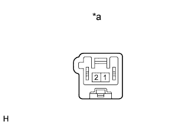
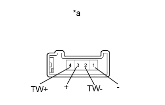

ДИНАМИК ПАНЕЛИ ПРИБОРОВ > ПРОВЕРКА |
| 1. ПРОВЕРЬТЕ ПЕРЕДНИЙ ДИНАМИК № 2 В СБОРЕ |
Для моделей производства JBL:
|  |
Измерьте сопротивление в соответствии со значениями, приведенными в таблице ниже.
| Контакты для подключения диагностического прибора | Состояние | Заданные условия |
| 1 - 2 | Всегда | 1,6 - 2,2 Ом |
| *a | Устройство с неподсоединенным жгутом проводов (Передний динамик № 2) |
кроме моделей производства JBL:
Измерьте сопротивление в соответствии со значениями, приведенными в таблице ниже.
| Контакты для подключения диагностического прибора | Состояние | Заданные условия |
| 1 - 2 | Всегда | 4 Ом |
| *a | Устройство с неподсоединенным жгутом проводов (Передний динамик № 2) |
| 2. ПРОВЕРЬТЕ ПЕРЕДНИЙ ДИНАМИК № 2 (для моделей с 6 динамиками) |
|  |
Измерьте сопротивление в соответствии со значениями, приведенными в таблице ниже.
| Контакты для подключения диагностического прибора | Условие | Заданные условия |
| 1 (-) - 3 (+) | Всегда | 4 Ом |
| 1 (-) - 2 (TW-) | Всегда | Менее 1 Ом |
| 3 (+) - 4 (TW+) | Всегда | Менее 1 Ом |
| *a | Устройство с неподсоединенным жгутом проводов (Передний динамик № 2) |
| 3. ПРОВЕРЬТЕ ПЕРЕДНИЙ ДИНАМИК № 4 В СБОРЕ |
Для моделей производства JBL:
Измерьте сопротивление в соответствии со значениями, приведенными в таблице ниже.
| Контакты для подключения диагностического прибора | Условие | Заданные условия |
| 1 - 2 | Всегда | 1,6 - 2,2 Ом |
| *a | Устройство с неподсоединенным жгутом проводов (Передний динамик № 4) |
кроме моделей производства JBL:
Измерьте сопротивление в соответствии со значениями, приведенными в таблице ниже.
| Контакты для подключения диагностического прибора | Условие | Заданные условия |
| 1 - 2 | Всегда | 6 Ом |
| *a | Устройство с неподсоединенным жгутом проводов (Передний динамик № 4) |